| 日付 | 2026年3月1日（日） |
|---|---|
| 山域 | 草津周辺 |
| メンバー | 単独 |
| 山行形態 | 日帰り |
| アクセス | 車 |
| ルート (Map) | 四阿山駐車場 (8:12) - (10:20) 四阿山 (10:56) - (12:19) 四阿山駐車場 |
車窓からは霧氷が見られる。ここより標高を上げると見られなかったので、
昨夜、山の中腹に雲がかかっていたのかもしれない。
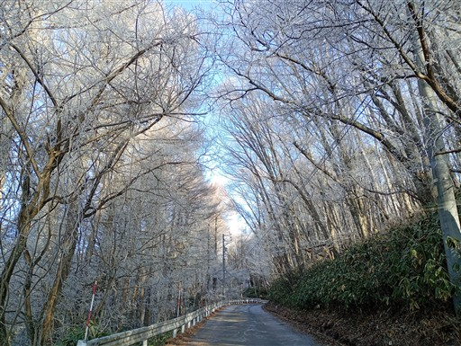
四阿山の駐車場に到着。標高1450m。
あまり広く無い駐車場ではあるが、ほぼ満車状態だ。
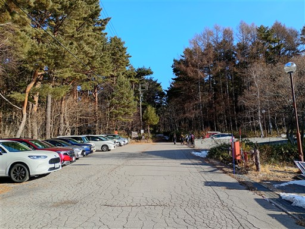
準備を整えて登山開始。まずは林道を登っていく。
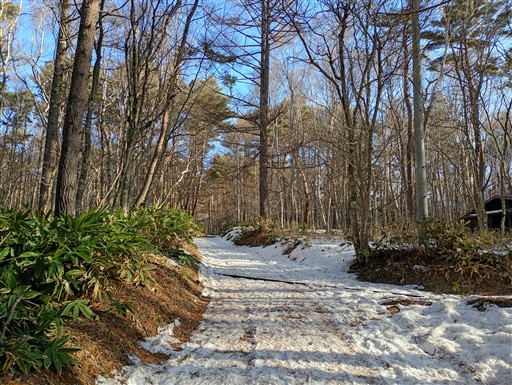
ゲートを通過。
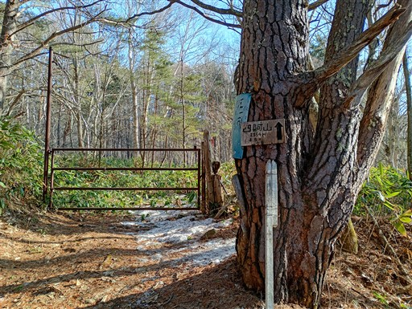
ここから本格的な登山道が始まる。
登山口から登山道はほぼ雪に覆われている。
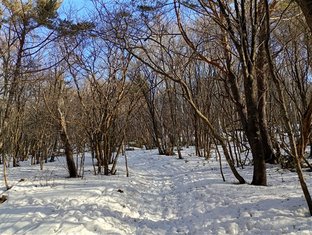
大きな広場に出てくる。牧場だろうか？
雪面はデコボコで案外歩きにくい。
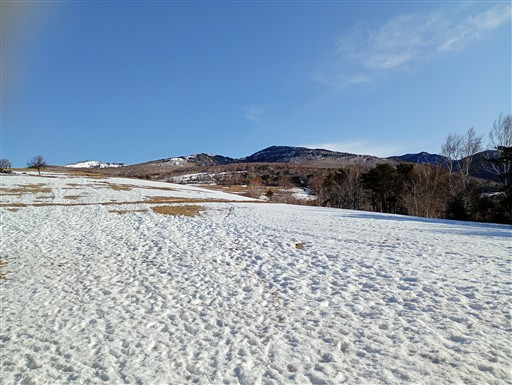
浅間連峰がずらっと並んでいる。一番左が浅間山だ。
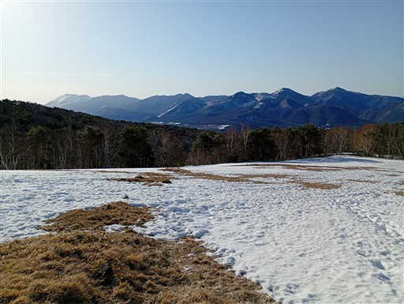
こちらは北アルプス。真白な山々が連なっている。
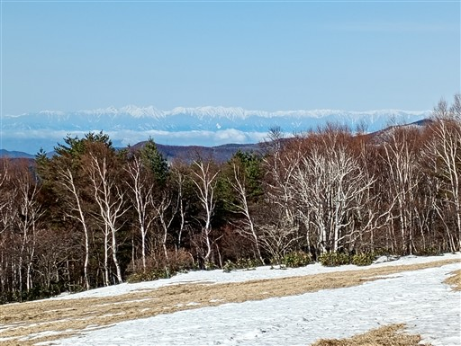
樹林帯の中に入る。
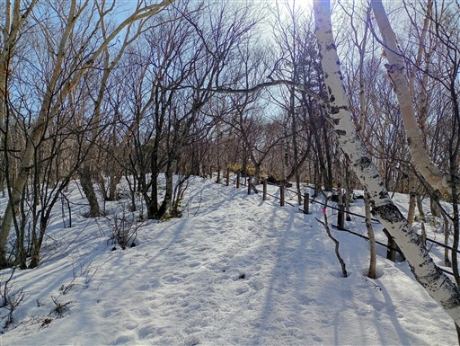
あちらこちらに踏み抜きの跡が見られる。
本日は下界が20度予想。午後は雪面がヤバくなりそうだ。
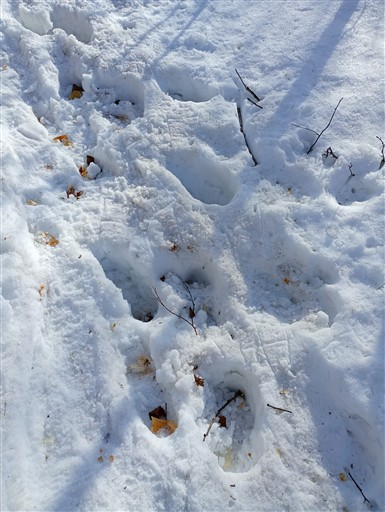
遭難碑だろうか？名前と年月日が記載されている。
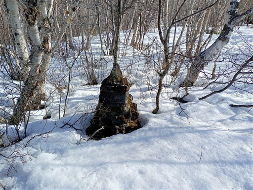
気持ちの良い登山道が続く。案外、樹林帯が長い。
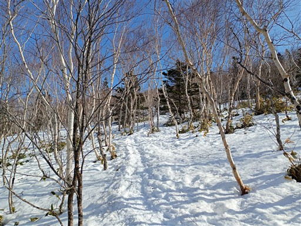
この辺りは雪が無くて夏道が出ている。
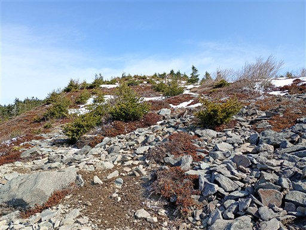
振り返ると素晴らしい展望が広がる。
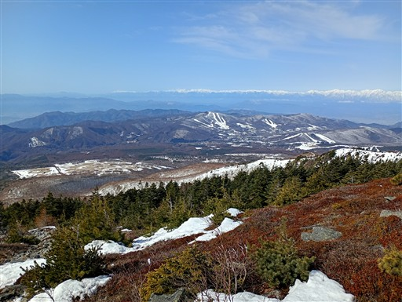
根子岳との分岐点に到着。
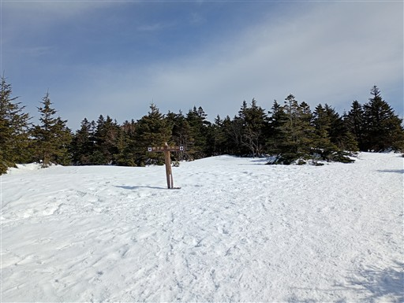
木の上に雪がこんもりと積もっている。
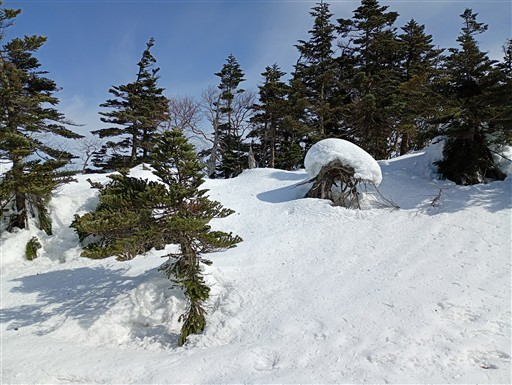
山頂部が見えてきた。ここまでずっと緩い傾斜だったが、山頂直下だけそこそこ急斜面だ。
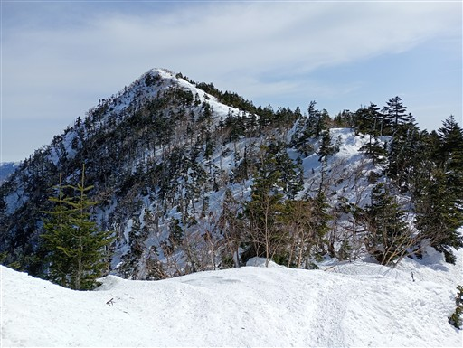
エビのしっぽと思われる雪が大量に散乱している。
暖かくて落ちてしまったのだろうか？中身がスカスカなのか、かなり軽い。
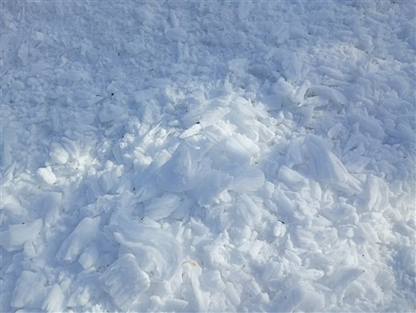
山頂までの道。傾斜がきつそうに見えたが、それほどではない。
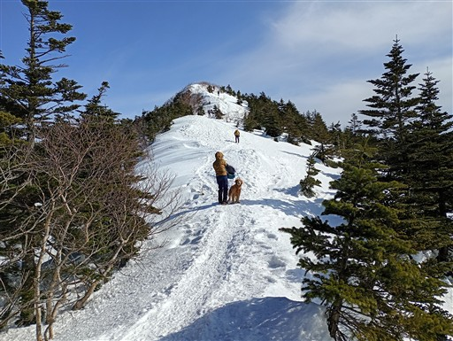
四阿山の山頂に到着。
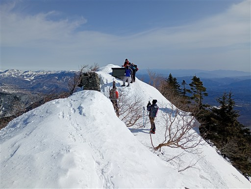
山頂標識。標高2354m。
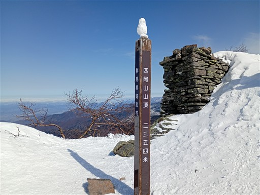
まず目を引くのが北アルプス。意外なほど近い場所に雪の壁が連なっている。
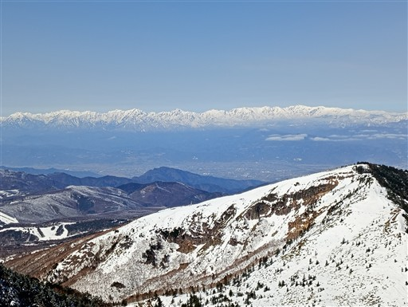
こちらは北信の山々。妙高山、火打山、高妻山などが見えている。
一際白い山は新潟焼山だ。
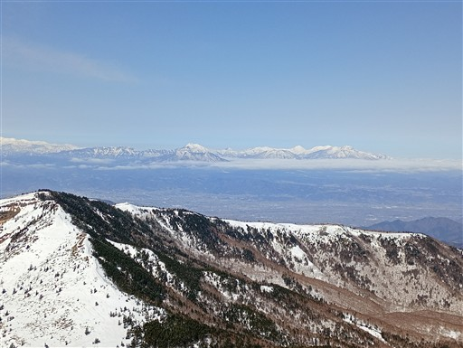
浅間連峰。浅間山、黒斑山、篭ノ登山、湯ノ丸山などが並んでいる。
右奥は八ヶ岳だ。
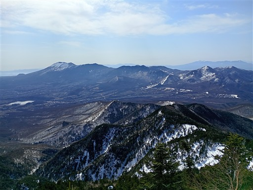
山頂から続く稜線は痩せ尾根であまり踏み跡がない。
奥に見えているのは草津白根山の辺りだ。
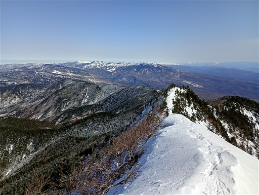
こちらの方面はあまり雪がない。
見えているのは浅間隠山、榛名山、赤城山など。
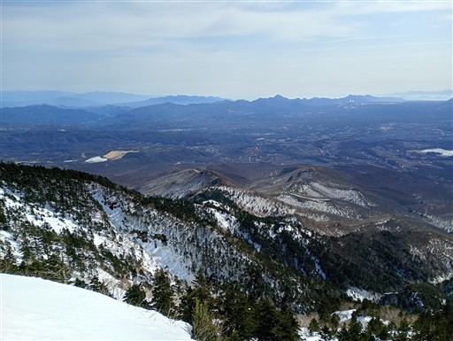
わずかに残ったエビのしっぽ。
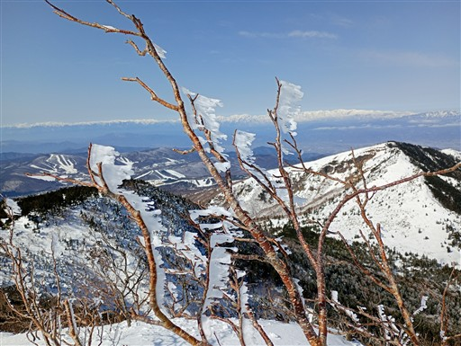
細長い山頂は広くはないが、混雑していないので腰を下ろせるスペースは十分にある。
ゆっくり昼食を取ったら名残惜しいが下山する。
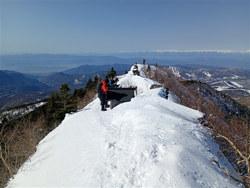
大展望の道を下っていく。下りの方が視界が広がる。
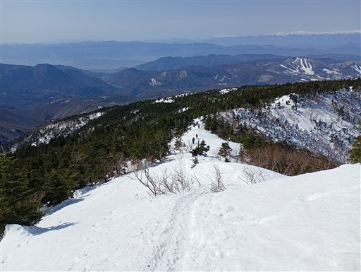
雪原と目の前に見える北アルプス。
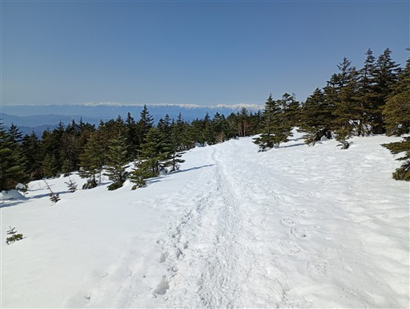
この辺りは雪面が荒れまくっている。
2～3回、ズボッといったが、12時前なので、まだ雪面はそこまで柔らかくない。
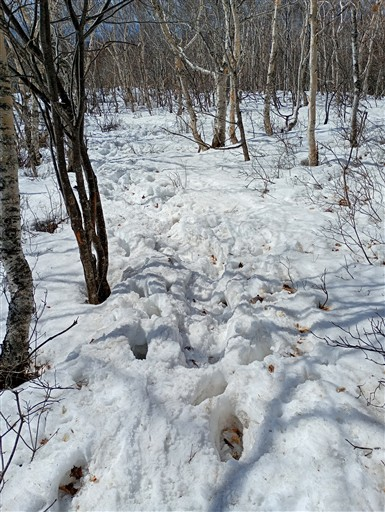
牧場と思われる場所まで下りてきた。広大な雪原を歩いていく。
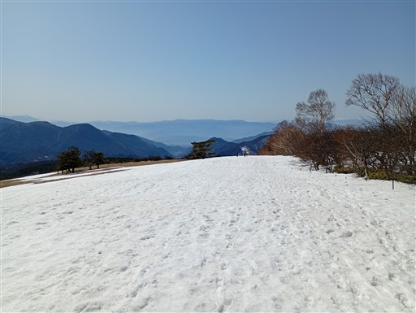
スキーヤーが滑った跡が見られる。最後は林道を歩いて、無事下山。
久しぶりの雪山で最高の展望を楽しめた。
今回はツボ足で行ったが、下山中は結構スリップしたので、チェーンスパイクが欲しくなった。
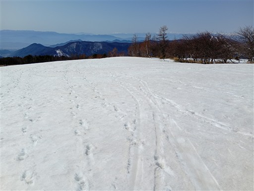